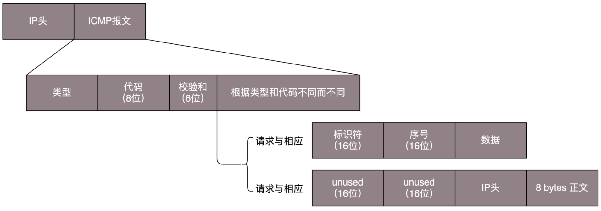
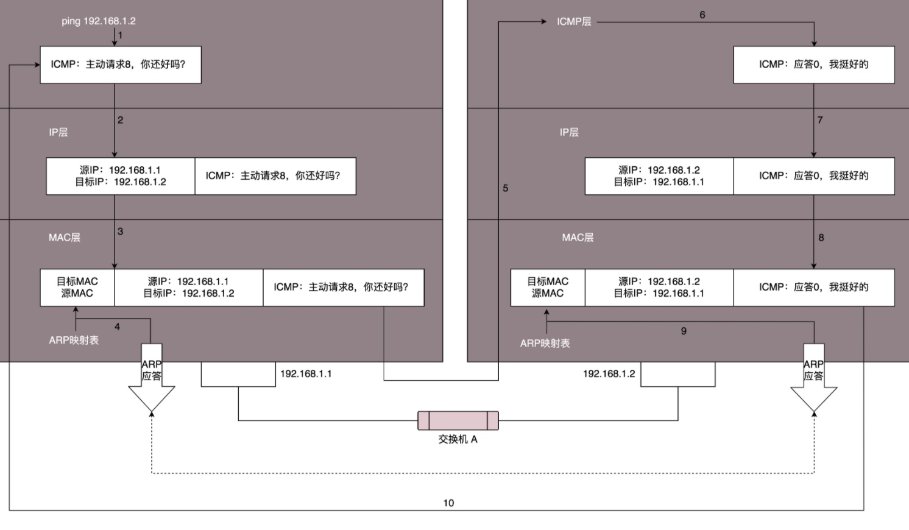

ICMP协议是IP层的附属协议，是介于IP层和TCP层之间的协议，一般认为属于IP层协议。 IP协议用它来与其他主机或路由器交换错误报文和其他的一些网络情况。 在ICMP包中携带了控制信息和故障恢复信息。 主要用于路由器主机向其他路由器或者主机发送出错报文的控制信息。
我们想要查看本机与另一台机器是否连通经常会使用ping。
ping是基于ICMP协议工作的全称 Internet Control Message Protocol，就是互联网控制报文协议。
网络包在异常复杂的网络环境中传输时，常常会遇到各种各样的问题。当遇到问题的时候，网络包总不能“死个不明不白”要传出消息来，报告情况。
ICMP 报文是封装在 IP 包里面的。因为传输指令的时候，肯定需要源地址和目标地址。它本身非常简单。如下图：

ICMP 报文有很多的类型，不同的类型有不同的代码。最常用的类型是主动请求为 8，主动请求的应答为 0。
ICMP
查询报文类型
常用的 ping 就是查询报文，是一种主动请求，并且获得主动应答的 ICMP 协议。所以，ping 发的包也是符合 ICMP 协议格式的，只不过它在后面增加了自己的格式。
对 ping 的主动请求，进行网络抓包，称为 ICMP ECHO REQUEST。同理主动请求的回复，称为ICMP ECHO REPLY。比起原生的 ICMP，这里面多了两个字段，一个是标识符另一个是序号。
标识符标记用于做什么，需要用于标记第几个发出去的。
在选项数据中，ping 还会存放发送请求的时间值，来计算往返时间，说明路程的长短
差错报文类型
ICMP 差错报文的例子：终点不可达为 3，源抑制为 4，超时为 11，重定向为 5。
终点不可达
网络不可达代码为 0，主机不可达代码为 1，协议不可达代码为 2，端口不可达代码为 3，需要进行分片但设置了强制不分片位代码为 4。
源站抑制
就是让源站放慢发送速度
时间超时
就是超过网络包的生存时间还是没到
路由重定向
就是让下次发给另一个路由器，上次发送的路径不是最优的。
差错报文的结构相对复杂一些。除了前面还是 IP，ICMP 的前 8 字节不变，后面则跟上出错的那个 IP 包的 IP 头和 IP 正文的前 8 个字节。
可以查看 ICMP 的前 8 字节
IP 数据包的头及正文前 8 字节
ping：查询报文类型的使用

假定主机 A 的 IP 地址是 192.168.1.1，主机 B 的 IP 地址是 192.168.1.2，它们都在同一个子网。那当你在主机 A 上运行“ping 192.168.1.2”后
ping 命令执行的时候，源主机首先会构建一个 ICMP 请求数据包，ICMP 数据包内包含多个字段。最重要的是两个，第一个是类型字段，对于请求数据包而言该字段为 8；另外一个是顺序号，主要用于区分连续 ping 的时候发出的多个数据包。每发出一个请求数据包，顺序号会自动加 1。为了能够计算往返时间 RTT，它会在报文的数据部分插入发送时间。
然后，由 ICMP 协议将这个数据包连同地址 192.168.1.2 一起交给 IP 层。IP 层将以 192.168.1.2 作为目的地址，本机 IP 地址作为源地址，加上一些其他控制信息，构建一个 IP 数据包。
接下来，需要加入 MAC 头。如果在本节 ARP 映射表中查找出 IP 地址 192.168.1.2 所对应的 MAC 地址，则可以直接使用；如果没有，则需要发送 ARP 协议查询 MAC 地址，获得 MAC 地址后，由数据链路层构建一个数据帧，目的地址是 IP 层传过来的 MAC 地址，源地址则是本机的 MAC 地址；还要附加上一些控制信息，依据以太网的介质访问规则，将它们传送出去。
主机 B 收到这个数据帧后，先检查它的目的 MAC 地址，并和本机的 MAC 地址对比，如符合，则接收，否则就丢弃。接收后检查该数据帧，将 IP 数据包从帧中提取出来，交给本机的 IP 层。同样，IP 层检查后，将有用的信息提取后交给 ICMP 协议。
主机 B 会构建一个 ICMP 应答包，应答数据包的类型字段为 0，顺序号为接收到的请求数据包中的顺序号，然后再发送出去给主机 A。
在规定的时候间内，源主机如果没有接到 ICMP 的应答包，则说明目标主机不可达；如果接收到了 ICMP 应答包，则说明目标主机可达。此时，源主机会检查，用当前时刻减去该数据包最初从源主机上发出的时刻，就是 ICMP 数据包的时间延迟。
如果跨网段的话，还会涉及网关的转发、路由器的转发等等。
Traceroute：差错报文类型的使用
通过Traceroute我们可以知道信息从你的计算机到互联网另一端的主机是走的什么路径。输出结果中包括每次测试的时间(ms)和设备的名称（如有的话）及其IP地址。
Traceroute 它可以使用 ICMP 的规则，故意制造一些能够产生错误的场景。
Traceroute 的第一个作用就是故意设置特殊的 TTL，来追踪去往目的地时沿途经过的路由器。
Traceroute 的参数指向某个目的 IP 地址，它会发送一个 UDP 的数据包。将 TTL 设置成 1，也就是说一旦遇到一个路由器或者一个关卡，就表示它“牺牲”了。如果中间的路由器不止一个，当然碰到第一个就“牺牲”。于是，返回一个 ICMP 包，也就是网络差错包，类型是时间超时。那大军前行就带一顿饭，试一试走多远会被饿死，然后找个哨探回来报告，那我就知道大军只带一顿饭能走多远了。
接下来，将 TTL 设置为 2。第一关过了，第二关就“牺牲”了，那我就知道第二关有多远。如此反复，直到到达目的主机。这样，Traceroute 就拿到了所有的路由器 IP。当然，有的路由器压根不会回这个 ICMP。这也是 Traceroute 一个公网的地址，看不到中间路由的原因。
怎么知道 UDP 有没有到达目的主机呢？
Traceroute 程序会发送一份 UDP 数据报给目的主机，但它会选择一个不可能的值作为 UDP 端口号（大于 30000）。当该数据报到达时，将使目的主机的 UDP 模块产生一份“端口不可达”错误 ICMP 报文。如果数据报没有到达，则可能是超时。
Traceroute 设置不分片
Traceroute 还有一个作用是故意设置不分片，从而确定路径的 MTU。要做的工作首先是发送分组，并设置“不分片”标志。发送的第一个分组的长度正好与出口 MTU 相等。如果中间遇到窄的关口会被卡住，会发送 ICMP 网络差错包，类型为“需要进行分片但设置了不分片位”。其实，这是故意的，每次收到 ICMP“不能分片”差错时就减小分组的长度，直到到达目标主机。
本文由 PCX
创作，采用 知识共享署名4.0 国际许可协议进行许可
本站文章除注明转载/出处外，均为本站原创或翻译，转载前请务必署名
最后编辑时间为: 2021-03-25T23:41:29+08:00